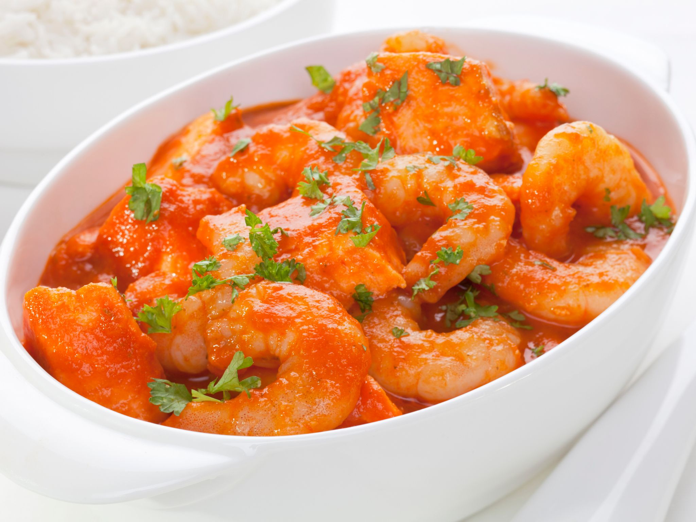

Le Dombre
Véritable symbole de la cuisine familiale et rustique, le dombre (souvent appelé "dombrés") se compose de petites boules de pâte façonnées à la main, mijotées longuement dans une sauce onctueuse et généreusement épicée.
Qu'ils soient cuisinés avec des haricots rouges, des crevettes locales ou du crabe, ils se distinguent par leur texture unique qui s'imprègne de toutes les saveurs du bouillon créole.
Le secret de sa préparation
La base des dombrés est d'une grande simplicité : un mélange de farine, d'eau et d'une pincée de sel, travaillé jusqu'à obtenir une pâte souple. Tout le savoir-faire réside dans le façonnage, où l'on roule de petites billes de la taille d'une bille ou d'une noix entre les paumes de la main.
Ces boulettes sont ensuite plongées directement dans une sauce en pleine ébullition (généralement un ragoût de haricots rouges à la queue de cochon, ou une sauce aux crevettes). En mijotant, l'amidon de la pâte épaissit naturellement le bouillon pour lui donner une texture veloutée irrésistible. L'ensemble est relevé d'ail, de cives, de persil, de thym et de piment antillais.